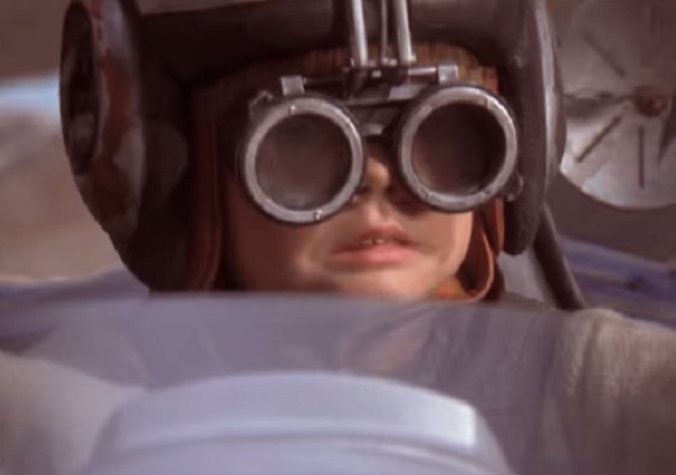
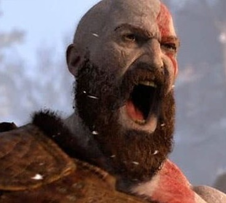
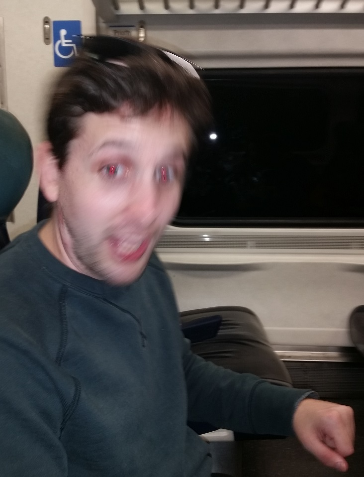
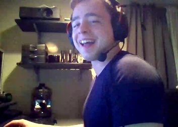

Check Out our Tracks!
A walk in the Park
Casual racetrack for warming up, inflating your safety rating, or just to enjoy the vitual sun and simulated fresh air.
My First Racetrack
Parental supervision required.
Rainbow Road
The final course of the Special Cup featured in all Mario Kart games and is the climactic course of each game it appears. As the name suggests, these tracks are made of rainbow-colored glass or metallic surfaces that are either one color or change their color as racers pass by them, depending on the game they appear in. Most of them are transparent throughout the Mario Kart series.
Mountain Mayhem
Get it, cause it's a track, on a mountain, and it gets pretty chaotic. I came up with the name myself.
Track n' Field
Despite what local police officers may claim, racing on this track is not illegal, just frowned upon.
Mute City
"Ben, play Mute City!"
Meet our I-Racists!
Anakin "It's working!" Skywalker 
Bio: A Human male born on the Outer Rim world of Tatooine. He later served the Galactic Republic as a Jedi Knight, and later the Galactic Empire as the Sith Lord Darth Vader. Skywalker was believed to be the one known as "The Chosen One" of Jedi prophecy, destined to bring balance to the Force
Andrew "Is probably muted" Disanza 
Bio: "My secret to racing is simple. All you have to do is listen." says professional Iracist Andrew. "Yea see people want to talk, and they say all sorts of shit about who they're voting for, how immigrants are takin' der jobs, and wether or not they think brown people deserve to be in the country, but the trick is to just agree with whatever they say. It makes life, and thus racing, easy."
Evan "The Bull Moose" Evans 
Bio: A small town midwestern boy, grown into a full blown east coast Iracist, Evan "the Bull moose" Evans has established himself as a top tier racer. His interest in racing first began on his bus rides to middle school. "My bus was smaller than my friend's busses, so I knew it must be faster, that's why they gave me a racing helment to wear on my way to school. Since then, I knew I was destined to race." states Evan.
Steven "Small Arms" Volpe 
Bio: Although he's never raced a car in his life, Steven spends his time pushing the payload from one end of the map to another. You be forgiven if you thought all that pushing would lead to a strong and built upper body, but steven "Small Arms" Volpe suffers from a rare form of muscular dystrophy, only affecting his upper torso. Doctors may be puzzled by his physique, but if there's one thing they're confident about, it's that Steven will use those small arms to insta-lock hanzo.